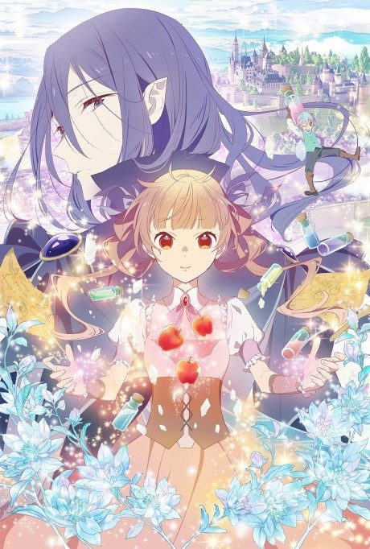
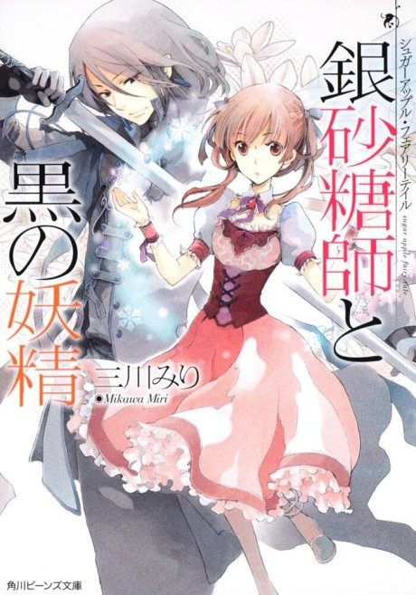

Anime
Light novelSugar Apple Fairy Tale
シュガーアップル・フェアリーテイル
After the anime, read the light novel from Volume 7.
7.3AniList
—Animeter
24 ep2 seasons
Is it worth pushing through?
Built from what visitors report across all 2 seasons (24 episodes).
Loading reports…Checking what other people said about this one.
Sign in above with your email to add your report.